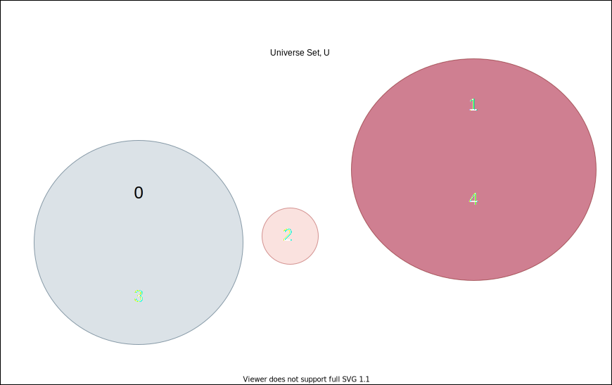

Defining relations on a set
While a partition of a set is a grouping of its elements into non-empty subsets in such a way that every element is included in exactly one subset, a relation on a set \(S\) is a condition that determines if \(a \sim b\) is true.
Example 1 Let \(S = \{0, 1, 2, 3, 4\}\) a relation \(\sim\) on \(S\) is the rule “\(a\) and \(b\) have the same remainder when divided by 3 .” To decide which elements are make this statement true, we can build a chart:
| 0 | 1 | 2 | 3 | 4 | |
|---|---|---|---|---|---|
| 0 | True | False | False | True | False |
| 1 | False | sTrue | False | False | True |
| 2 | False | False | True | False | False |
| 3 | True | False | False | True | False |
| 4 | False | True | False | False | True |

The set \(\{0, 1, 2, 3, 4\}\) is partitioned by a set of three sets \(\{0, 3\}\), \(\{1, 4\}\) and \(\{2\}\).
A relation \(\sim\) on a set \(S\) is an equivalence relation if:
- the relation is reflexive, for all \(x\) in \(S,\) the statement “\(x \sim x\)” is true; and
- the relation is symmetric, that is for all \(x\) and \(y\) in \(S\) the statement “\(x \sim y \rightarrow y \sim x\);” and
- the relation is transitive, for all \(x, y\) and \(z\) in \(S\) the statement “If \(x \sim y\) and \(y \sim x\) then \(x \sim z.\)”
Every equivalence relation on a set defines a partition of the set, and every partition defines an equivalence relation. Our example of the partition of the set \(\{0, 1, 2, 3, 4\}\) is generated by the relation \(x \sim y\) if and only if \(\lfloor \frac{x}{3}\rfloor = \lfloor \frac{y}{3}\rfloor.\)